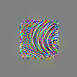

Module 2 · Vision replication on a CPU
Vision I: curve detectors on a CPU, with the test written first
InceptionV1, synthetic curves, feature visualisation in plain torch, and a replication that had to change shape when the weights turned out to be different.
The claim being replicated
Cammarata et al. (2020) describe a family of ten units in InceptionV1’s mixed3b layer, numbered 379, 406, 385, 343, 342, 388, 324, 340, 330, and 349, and claim: “Each curve detector implements a variant of the same algorithm: it responds to a wide variety of curves, preferring curves of a particular orientation and gradually firing less as the orientation changes. Curve neurons are invariant to cosmetic properties such as brightness, texture, and color,” and “Curve detectors collectively span all orientations” [Curve Detectors]. The evidence is of seven kinds, listed in Zoom In: feature visualisation, dataset examples, synthetic examples, joint tuning, feature implementation, feature use, and handwritten circuits [Zoom In]. Synthetic stimuli are the kind you can run on a laptop: draw a curve with known orientation, show it, read the activation.
The model, and the first surprise
The 2026 essay’s advice is that native neurons need only forward passes, and “InceptionV1 runs on a CPU” is true: torchvision.models.googlenet with GoogLeNet_Weights.IMAGENET1K_V1 loads in about a second and runs a 224×224 image in well under a second. The layer the paper calls mixed3b is inception3b, with 480 channels on a 28×28 map. The labs draw a thin dark arc through the centre of a grey field, subtract the response to a blank grey field, and read the mean of the central 2×2 cells of the channel’s post-ReLU map.
The first pre-registered test was the direct one: show the ten named units arcs at 36 orientations and predict that each is orientation-selective. It was run, and it is in the transcript as curve_tuning.py --units 379,…. Here are the named units on the held-out stimuli of the two-stage protocol described below:
ch scr held peak opp inv ipk line H1 H2 H3 H4
379 180 120 0.05 0.00 240 0.23 0.00 - y - y
406 250 250 -0.27 nan 250 -0.24 -0.25 y - - -
385 170 170 0.53 0.51 20 0.71 0.85 y - - -
343 210 190 0.01 -22.50 90 0.18 -0.07 y y - y
342 180 0 -0.62 nan 140 -0.57 -0.62 - - - -
388 310 310 0.80 0.00 310 0.70 0.12 y y y y
324 80 100 0.57 0.37 100 0.55 0.44 y - y -
340 20 280 0.46 0.00 170 0.44 0.25 - y - y
330 70 90 0.24 0.00 80 0.30 0.62 y y y -
349 240 240 1.54 0.00 230 1.42 0.52 y y y y
H1: candidates 70% (need >= 80%) -> FAIL; random-channel control 73%
H2: candidates 60% (need >= 80%) -> FAIL; random-channel control 49%
H3: candidates 40% (need >= 60%) -> FAIL; random-channel control 39%
H4: candidates 50% (need >= 80%) -> FAIL; random-channel control 48%
H1-H4 jointly: candidates 20%; random-channel control 23%The named units are indistinguishable from random channels: 20% of them pass all four hypotheses, against 23% of 100 random channels. Peaks are tiny (the strongest, 349, reaches 1.54, where the channels found below reach 6.6), and two units go negative on every stimulus. This is not a failure of the paper. It is the expected outcome of a mistake in the replication design that the test caught: torchvision’s GoogLeNet weights are its own training run (the weight file’s recipe points to torchvision’s classification reference, and the model applies its own input transform when those weights are loaded) [torchvision], not the TensorFlow InceptionV1 the Distill work used. Channel 379 of one training run has no relation to channel 379 of another. The named-unit replication cannot be done with these weights, and the course says so rather than quietly dropping the test.
The replication that can be done: the family claim
What transfers between training runs, if the paper is right about the architecture, is the family: mixed3b should contain orientation-selective curve detectors spanning the circle. That claim can be tested with a two-stage protocol that keeps the look and the test apart.
Stage 1, screening. Show all 480 channels dark arcs at 36 orientations and two radii (25 and 45 px, 3 px thick). Rank channels by peak response times orientation selectivity. Take the top 12. This stage is looking: it chooses the hypothesis, and nothing it produces is evidence.
Stage 2, pre-registered, on stimuli the screening never saw. Written before the held-out stimuli were rendered:
H1 held-out radii (35, 60 px) and thickness (5 px): preferred orientation within 20° of screening, for >= 80% of candidates
H2 response at preferred+180° < 0.25 x peak, for >= 80% (a curve bent the other way is a different curve)
H3 light arc on dark field: preference within 20°, peak >= 0.3 x dark-arc peak, for >= 60% (cosmetic invariance)
H4 arc peak > 1.5 x the peak to a straight line of the same tangent, for >= 80% (curve, not edge)
H5 held-out preferred orientations leave no gap > 90° around the circle (family spans orientations)
controls: 100 random non-candidate channels through the same tests; blank-field response subtracted everywhereH2 and H4 do the work a sceptic needs. A line or edge detector responds to the same stimulus at θ and θ+180° (the tangent is the same) and to a straight line as much as to an arc. A curve detector should not. The result:
STAGE 1 (screening on 36x2 dark arcs): median channel peak 0.33, selectivity median 0.33
top 12 channels by peak x selectivity: [177, 222, 158, 128, 133, 246, 284, 253, 194, 311, 140, 242]
STAGE 2 (held-out stimuli):
ch scr held peak opp inv ipk line H1 H2 H3 H4
177 180 180 6.62 0.00 180 5.99 0.13 y y y y
222 90 100 5.79 0.00 100 5.82 0.35 y y y y
158 150 150 5.45 0.00 150 5.48 1.11 y y y y
128 0 10 5.48 -0.05 10 5.04 0.17 y y y y
133 40 40 4.96 0.00 40 5.05 0.57 y y y y
246 120 120 4.72 0.00 120 4.44 0.83 y y y y
284 270 270 4.12 -0.02 260 4.23 -0.03 y y y y
253 210 200 4.73 0.00 210 4.06 0.39 y y y y
194 310 300 3.98 0.00 310 3.21 0.30 y y y y
311 310 310 3.61 0.00 310 3.93 0.19 y y y y
140 80 80 3.91 0.00 80 3.39 0.50 y y y y
242 270 270 4.45 0.00 270 4.32 0.37 y y y y
H1: candidates 100% (need >= 80%) -> pass; random-channel control 72%
H2: candidates 100% (need >= 80%) -> pass; random-channel control 47%
H3: candidates 100% (need >= 60%) -> pass; random-channel control 42%
H4: candidates 100% (need >= 80%) -> pass; random-channel control 46%
H1-H4 jointly: candidates 100%; random-channel control 22%
H5: held-out preferred orientations [10, 40, 80, 100, 120, 150, 180, 200, 270, 270, 300, 310]; largest gap 70 degrees -> passAll twelve candidates pass all four held-out hypotheses; 22 of 100 random channels do. Every candidate is silent at the opposite orientation (opp 0.00), keeps its preference under inverted contrast (inv within 10° of held, peaks within a few percent), and responds between 4 and 50 times more to an arc than to a line of the same tangent. The preferred orientations cover the circle with no gap above 70°. Lesson 07 reads the controls more carefully, because 72% of random channels passing H1 is not nothing.
Feature visualisation without a library
The paper’s first line of evidence is feature visualisation: “optimization to find the input to a neural network that maximizes a given objective” [Curve Detectors]. labs/reference/feature_vis.py does it in forty lines of torch: a 128×128 image parameterised through a sigmoid, random jitter each step, bilinear upsampling to 224, Adam on the negative centre activation of the channel plus a small total-variation penalty. For channel 177, the best screening candidate, the centre objective goes from 0.01 at step 0 to 9.87 at step 150, above anything a rendered arc achieved (6.62).

The result is a field of curved, roughly parallel stripes, which is consistent with a curve detector and would also be consistent with several other things. The paper’s view, that feature visualisation “establishes a causal link, while dataset examples test the neuron’s use in practice” [Zoom In], is the right way to hold it: the image shows what can drive the unit, not what does.A replication that cannot use the paper’s unit numbers is still a replication of the paper’s architectural claim, if you say which claim you are testing. “Independent training runs of InceptionV1 develop a mixed3b curve family” is a stronger and more interesting result than “unit 379 is a curve detector,” and it is the one these weights can address.
Reusing screening stimuli as test stimuli. The screening radii were 25 and 45 px, 3 px thick; the held-out ones are 35 and 60 px, 5 px thick, plus inverted contrast and lines. Had the candidates been tested on the screening set, 100% would have been guaranteed by construction.
The named units scored like random channels. A colleague concludes “the Curve Detectors result does not replicate.” What is wrong with that sentence, and what is the correct one?
Reveal the reasoning
The named-unit test did not test the paper’s claim, because the units it named exist only in the paper’s weights; it tested whether torchvision’s channel 379 happens to be a curve detector, which nobody claimed. The correct sentence is: “The paper’s unit numbers do not transfer to torchvision’s independently trained GoogLeNet, as expected; the family-level claim, that mixed3b contains orientation-selective curve detectors spanning all orientations, replicated on held-out synthetic stimuli with 12/12 candidates passing four pre-registered hypotheses against 22/100 random channels.”
Run the two-stage test and the feature visualisation. Then change --top 12 to --top 24 and predict, before running, how the pass rates will change.
python labs/reference/curve_tuning.py
python labs/reference/feature_vis.py --unit 177 --out assets/img/fv-3b-177.pngWhat to look for
Candidates ranked 13–24 are weaker on screening, so some will fail H2 or H4 on held-out stimuli; the pass rate should fall toward the random-channel rate as the ranking runs out of real curve units. Whether it falls at 13 or at 20 is a measurement of how large the family is in these weights, which the paper’s count of ten (in its weights) does not settle.
- Cammarata, Goh, Carter, Schubert, Petrov & Olah (Distill, 2020), Curve Detectors
- Olah, Cammarata, Schubert, Goh, Petrov & Carter (Distill, 2020), Zoom In: An Introduction to Circuits
- torchvision.models.googlenet and GoogLeNet_Weights.IMAGENET1K_V1 (torchvision 0.29.1 installed source)
Quotations were checked against the fetched sources; every number from a run on this course’s machine is in the transcript. Numbers from papers are only those listed in the bibliography as verified.